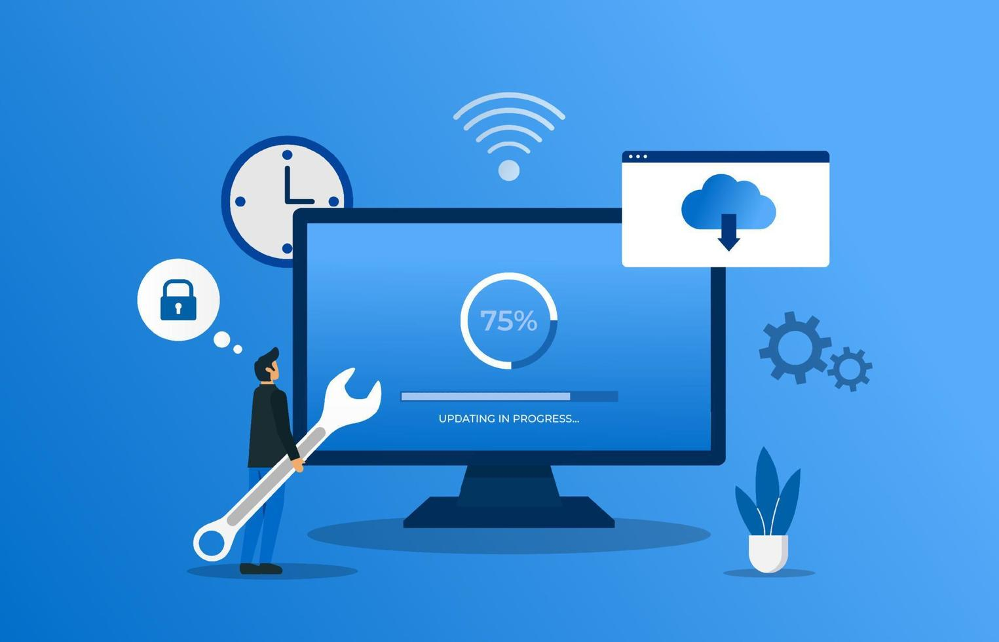
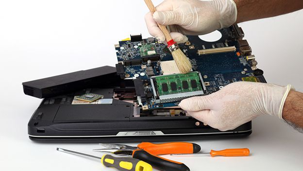
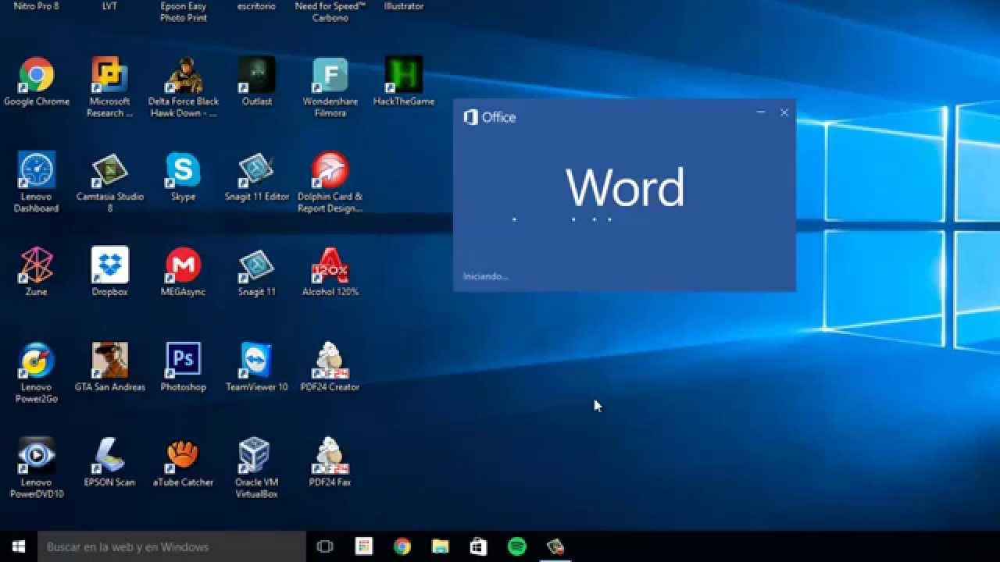
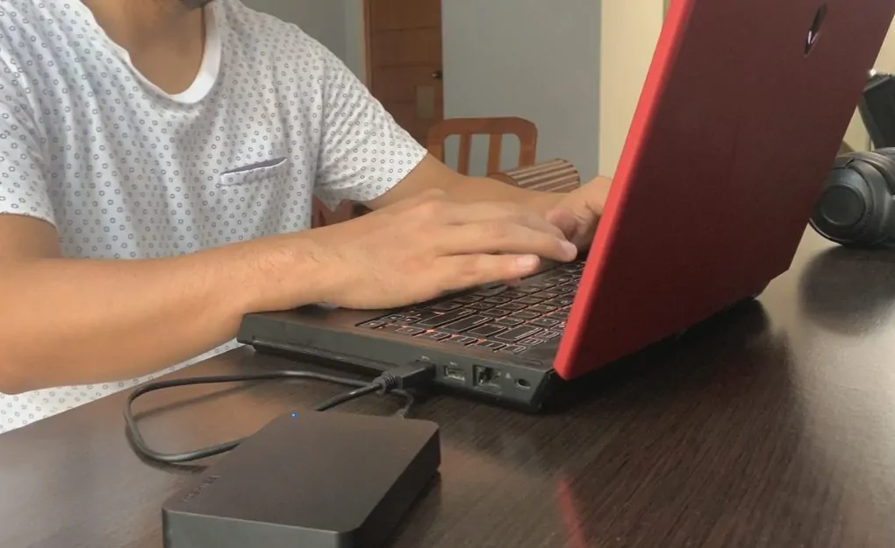
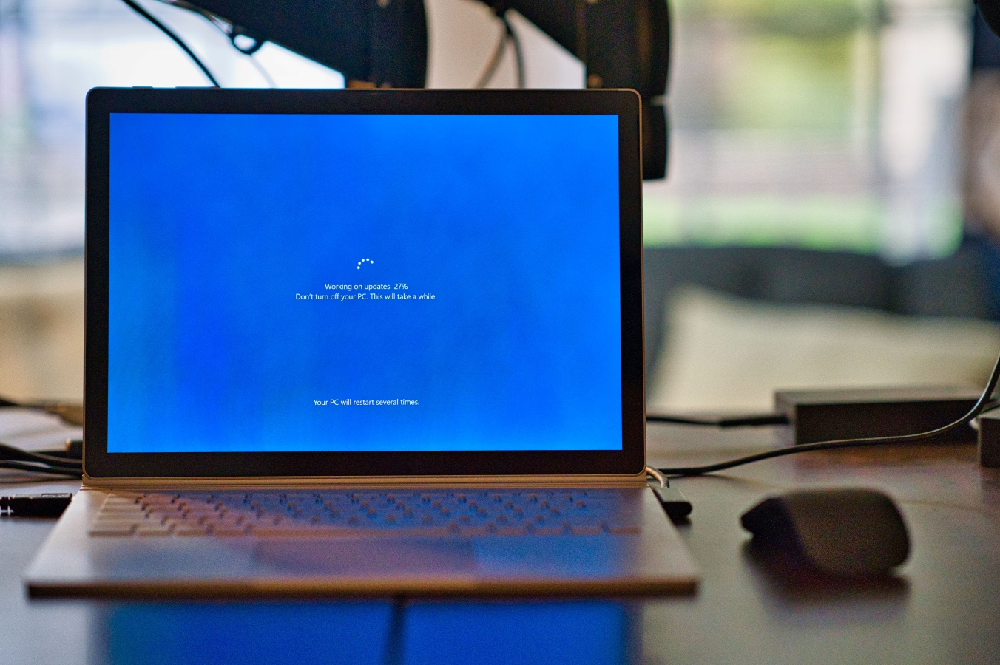

Formateo de Equipos
Instalación limpia del sistema operativo y configuración inicial.
Reparación, mantenimiento y optimización de equipos.
Solicitar ServicioNuestros Servicios
Instalación limpia del sistema operativo y configuración inicial.
Limpieza de malware y protección del sistema.

Mejoramos la velocidad y estabilidad de tu computadora.

Limpieza interna y revisión de componentes.
Protección, recuperación y transferencia segura de archivos importantes.

Instalación y configuración de programas, controladores y herramientas.
Nuestros Proyectos




Preguntas Frecuentes
El mantenimiento preventivo suele realizarse entre 1 y 3 horas, dependiendo del estado del equipo.
Sí. Evaluamos cada caso y recuperamos archivos siempre que el dispositivo lo permita.
Instalamos Windows, controladores y el software solicitado por el cliente.
Sí. Todos nuestros servicios cuentan con garantía sobre el trabajo realizado.
Contáctanos